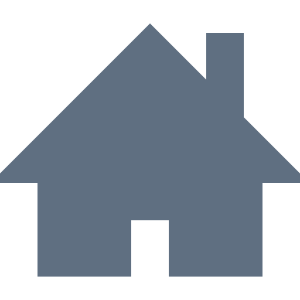

<mat-toolbar>

  <button class="btn sidebar-btn menu-btn ripple" (click)="toggleSideBar(sidenav)" [ngClass]="sideBarOpened ? 'sidebar-toggled' : ''">

    
  </button>

  <div class="toolbar-content">
    <h4>
      breadCrumb
    </h4>
    <h2>
      Cartão Pax Gerenciamento
    </h2>
  </div>

  <button class="btn sidebar-btn logout-btn ripple" (click)="logOut()">
    
    <a>Sair</a>
  </button>

  <button class="btn sidebar-btn logout-btn ripple" (click)="logOut()">
    
  </button>

</mat-toolbar>

<mat-sidenav-container>

  <mat-sidenav #sidenav [opened]="!isMobile" [mode]="!isMobile ? 'side' : 'over'" [ngClass]="sideBarOpened ? 'scale-sidenav' : ''">

    <div class="menu-content">

      <ul>

        <li class="menu-item ripple" [ngClass]="sideBarOpened ? '' : 'icon-only'" [routerLink]="['./newsmanager']">
          
          <a>Menu 1</a>
        </li>

        <!-- with submenu -->
        <div class="sub-menu">
          <li class="menu-item ripple sub-menu-toggler" [ngClass]="sideBarOpened ? '' : 'icon-only'">
            
            <a>Menu 2</a>
            <div class="arrow">&#9654;</div>
          </li>

          <div class="sub-menu-content">
            <li class="menu-item ripple sub-item" [ngClass]="sideBarOpened ? '' : 'icon-only'" [routerLink]="['./newsmanager']">
              
              <a>Sub Menu 1</a>
            </li>
            <li class="menu-item ripple sub-item" [ngClass]="sideBarOpened ? '' : 'icon-only'" [routerLink]="['./newsmanager']">
              
              <a>Sub Menu 2</a>
            </li>
          </div>
        </div>
        <!-- with submenu -->


        <li class="menu-item ripple" [ngClass]="sideBarOpened ? '' : 'icon-only'" [routerLink]="['./newsmanager']">
          
          <a>Menu 3</a>
        </li>

        <li class="menu-item ripple" [ngClass]="sideBarOpened ? '' : 'icon-only'" [routerLink]="['./newsmanager']">
          
          <a>Menu 4</a>
        </li>

        <li class="menu-item ripple" [ngClass]="sideBarOpened ? '' : 'icon-only'" [routerLink]="['./newsmanager']">
          
          <a>Menu 5</a>
        </li>

      </ul>

    </div>

  </mat-sidenav>

  <div class="dashboard-content">

    <ng-content></ng-content>
    
  </div>

</mat-sidenav-container>